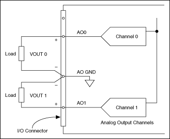

You can generate single sample DC signals or time-varying multiple sample signals.
Single Samples�Including Steady Signals
Use single samples if the signal level is more important than the generation rate. For instance, generate one sample at a time if you need to generate a constant, or DC, signal. You can use software or hardware timing if the device supports hardware timing to control when the device generates a signal.
Time-Varying Multiple Samples
Use multiple samples if the generation rate is just as important as the signal level, as in an AC sine wave. Function generators are a common type of device that you can program to produce certain types of waveforms, such as sine, triangle, and square waves. You also can use a DAQ device as a function generator. You do this by generating one cycle of a sine wave, such as with the Sine Generation VI in LabVIEW, storing one cycle of sine wave data in a waveform, and programming the device to generate the values continuously from the waveform one point at a time at a specified rate.
Also called buffered analog output, generating multiple samples involves the following steps:
Your application writes multiple samples into a buffer.
All the samples in the buffer are then sent to your device according to the timing you specify. You can use software or hardware timing (if your device supports hardware timing) to control when your device generates a signal.
Connecting Analog Output Signals
Signal connections vary depending on the device, connector block, and signal conditioning module. For E Series devices, the analog output signals are AO0, AO1, and AO GND. AO0 is the voltage output signal for analog output channel 0. AO1 is the voltage output signal for analog output channel 1. AO GND is the ground reference signal for both analog output channels and the external reference signal. The following illustration shows how to make analog output connections for an NI device.

Analog Output Connections
Refer to the device documentation for information about specific terminals.
Examples
Refer to the following VIs for examples of performing this measurement. You must have a driver installed to find examples for that driver.
NI-DAQmx
You can use the DAQmx - Data Acquisition VIs to perform this measurement. Find related examples:
�Voltage - On Demand Output
You also can use the DAQ Assistant Express VI to perform this measurement.
�Add�
�Find
FieldPoint
You can use the FieldPoint VIs to perform this measurement. Find related examples:
�Getting Started
�Analyzing and Processing Signals
�Signal and Noise Generation
NI-FGEN
You can use the NI-FGEN VIs to perform this measurement. Find related examples:
�Arbitrary Waveform Generation
�Standard Function Generation
You also can use the NI-FGEN Express (Arb) VI to perform this measurement.
�Add�
�Find
You also can use the NI-FGEN Express (Standard Functions) VI to perform this measurement.
 �Voltage - On Demand Output
�Voltage - On Demand Output �Add�
�Add�